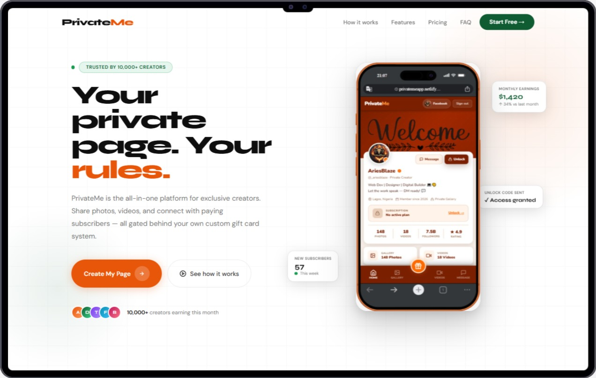

Featured product · Blog
PrivateMe: privacy as the product
Landing live at privateme-landing-page.pxxl.click.

What it solves
Default internet behaviour is permanent and public. PrivateMe is a bet that people want media experiences where visibility is intentional, reversible, and understandable — not buried in settings.
Who uses it & how
- People who share media but care who sees it
- Teams exploring privacy-first product positioning
- Users tired of “delete” meaning “maybe later, on a server”
Why this matters if you hire me
Trust UI is hard. I design interfaces that make serious promises feel simple — useful whether you’re building fintech, health, community, or any product where users need to feel safe clicking “continue.”
Skills this proves
- Brand + product narrative for sensitive domains
- Calm, high-trust visual systems
- Long-horizon product thinking, not only landing pages